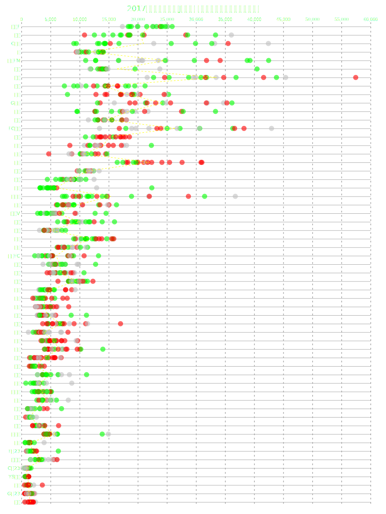
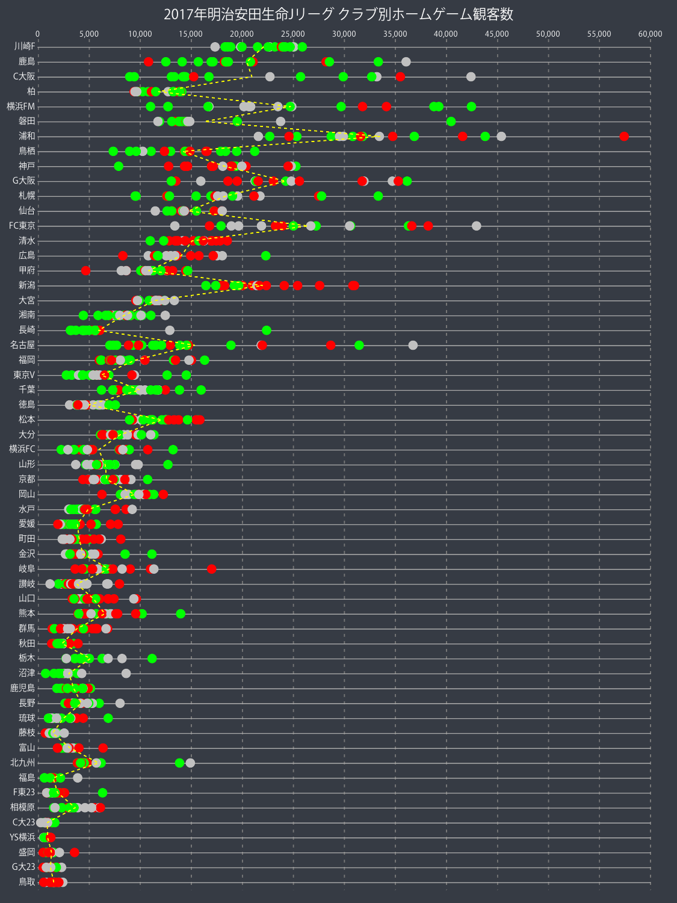
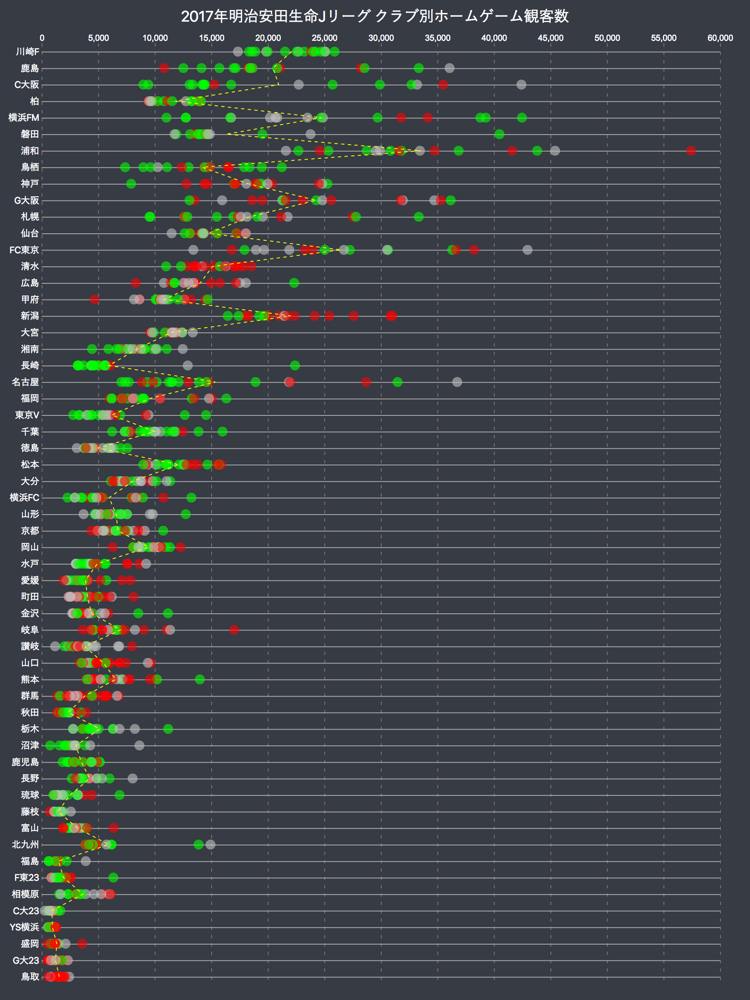

D3.js + jsdomでSVGファイルを作成
D3.jsとjsdomを使って、SVGファイルを作る方法です。
基本形
SVGファイルを作るに当たって、過去にQiitaに投稿したものを参照したら動作しませんでした。 どうやらjsdomが色々変わったらしいので、新しいバージョンで動くように書き換えました。
versions
d3@4.11.0
jsdom@11.5.1
makeSVG.js
const d3 = require('d3');
const jsdom = require('jsdom');
const { JSDOM } = jsdom;
const document = new JSDOM().window.document;
const size = {
width: 900,
height: 1200
};
const svg = d3.select(document.body)
.append('svg')
.attr("xmlns",'http://www.w3.org/2000/svg')
.attr('width', size.width)
.attr('height', size.height)
.style('background-color', "#363b44");
console.log(document.body.innerHTML)
Command Line
$ node makeSVG.js > output.svg
output.svg
<svg xmls="http://www.w3.org/2000/svg" width="900" height="1200" style="background-color: #363b44;"></svg>
これが基本形です。makeSVG.jsがconsole.log()で出力した内容を、>（リダイレクト）でファイルoutput.svgに出力しています。
jsdomの書き方が過去のものとは少し変わりました。
その他変更点など
過去の記事ではd3.queue()とd3.jsonで国土地理院のベクトルタイルを読み込みましたが、今回ローカルのファイルを読み込むに当たってd3.jsonが使えなかったので、代わりにfs.readFileを使用します。
const fs = require('fs');
// 上記の基本形は省略
const q = d3.queue()
.defer(fs.readFile, './data/j1results.json')
.defer(fs.readFile, './data/j2results.json')
.defer(fs.readFile, './data/j3results.json');
q.awaitAll((err, files) => {
if (err) throw err;
const data = files.map(str => JSON.parse(str));
/** D3 Scripts
* ex. svg.selectAll('rect')
* .data(d3.merge(data))
* .enter()
* .append('rect')
* ...
*/
console.log(document.body.innerHTML);
});
fsを使うなら、ファイルの出力方法はconsole.log()ではなく、fs.writeFile()でもいいかもしれません。お好きな方をお選びください。
fs.writeFile('output.svg', document.body.innerHTML, (err) => {
if (err) throw err;
console.log('save successful!');
});
D3.jsで描写したSVGはcssで要素のスタイルを設定する場合が多いのですが、SVGファイルはcssが読み込めません。selection.attrで地道にスタイリングしましょう。
以下は作成したSVGファイルの例です。

SVGファイルをpngに変換(imagemagick編)
SVGファイルをpngに変換する方法はいくつかあると思いますが、まず最初にimagemagickを使う方法を試してみます。

Command Line
$ convert -density 120 -background "#363b44" \
-font "/Library/Fonts/KozGoPr6N-Regular.otf" input.svg output.png
-densityは倍率と考えてよい（実際の定義は知らない）-backgroundを設定しないと背景透過になってしまいます-fontでフォントを指定しないと日本語は文字化けしてしまいます
フォントが変わる部分はさておき、SVGの透過度も再現してくれないのでかなり微妙な出来となってしまいました。
参考: convert コマンドでラベルに日本語を含むsvgをPDFに変換
SVGファイルをpngに変換(Headless Chrome編)
imagemagickの他に何かいい方法ないかなと調べてみたらHeadless Chromeという機能がChromeに備わっているということを知りました。
これを使ってhugoで立てたローカルホスト内のSVGファイルをキャプチャしてみます。
参考: ヘッドレス Chrome ことはじめ Google Developers

Command Line
$ alias chrome='/Applications/Google\ Chrome.app/Contents/MacOS/Google\ Chrome'
$ chrome --headless --disable-gpu --screenshot --window-size=900,1200 http://localhost:1313/input.svg
元のSVGファイルとほぼ同じ状態のpngが生成されました。（当たり前といえば当たり前なのですが）
画像の大きさは、指定したウィンドウサイズの2倍（この場合だと1800x2400）になりました。しかしimagemagickで生成したものよりも小さい容量になりました。
かなり手軽に綺麗なキャプチャができるので、今後headless chromeを使うことが多くなりそうです。